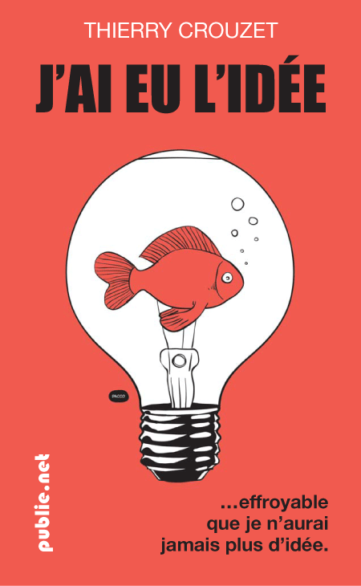

Choisissez une couverture III
Je continue à vous mettre à contribution. Après les propositions de hier et prise en compte de vos recommandations, je propose deux nouvelles versions. J'ai un faible pour la rouge et son côté BD.


Suite | 2010 | Sommaire | Texte publié lundi 27 septembre 2010